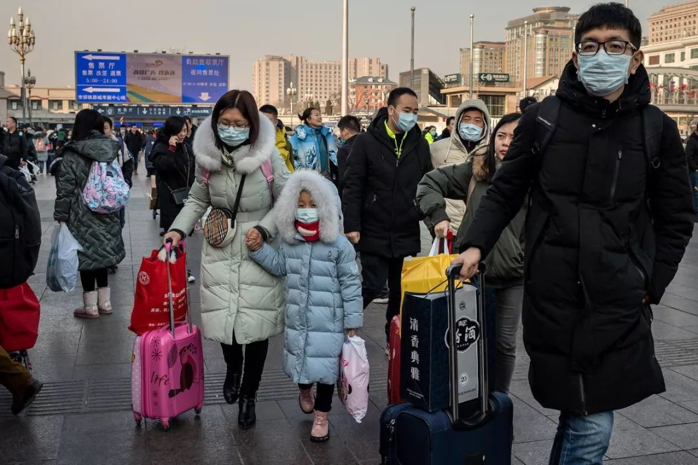
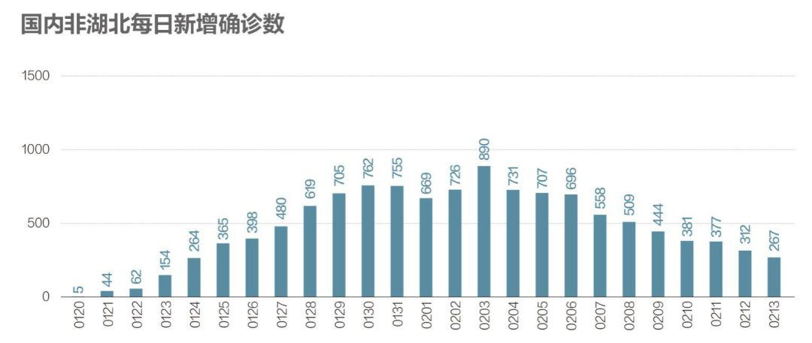
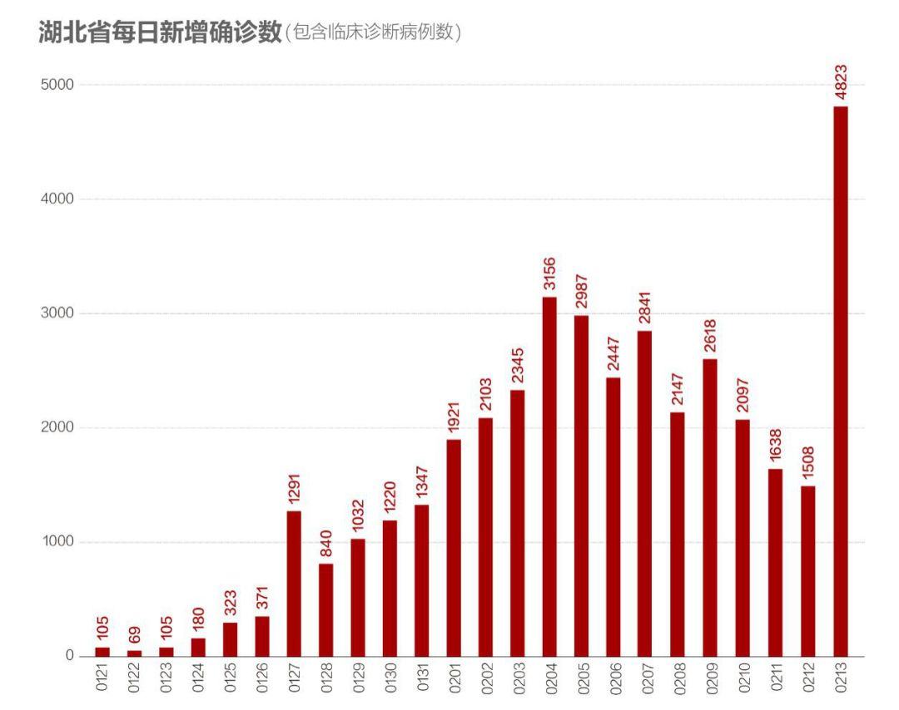
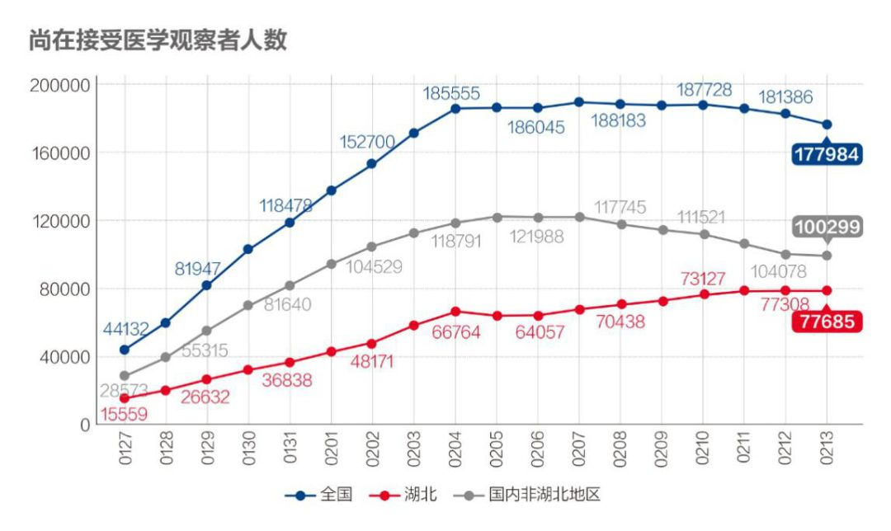
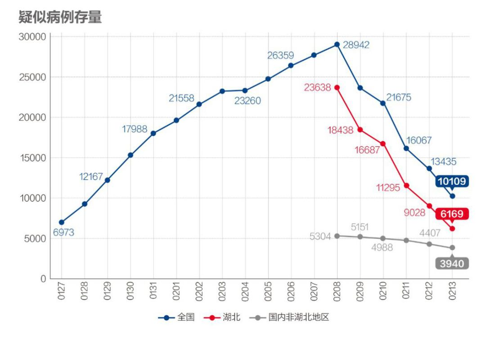
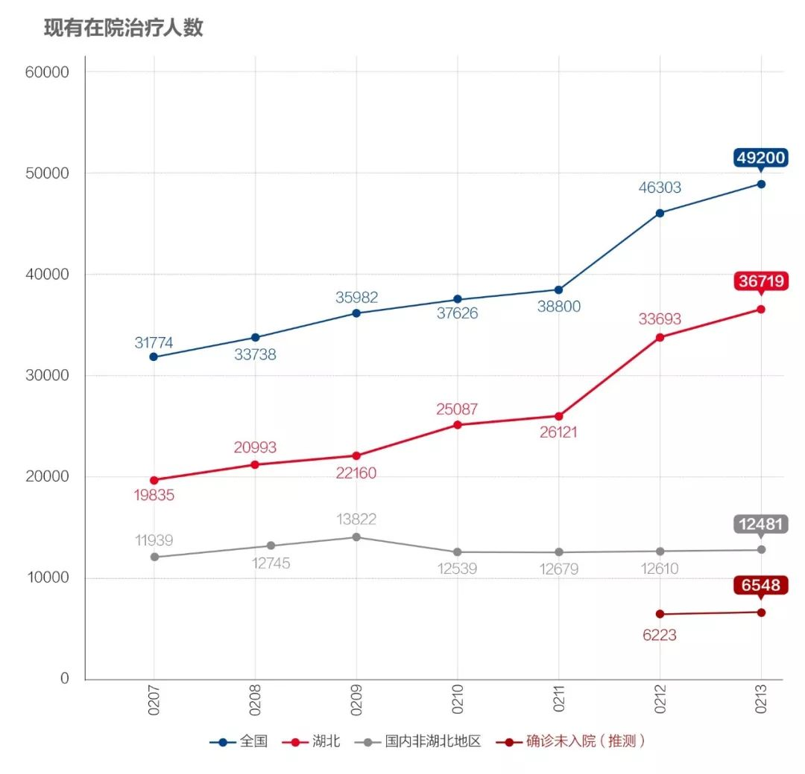
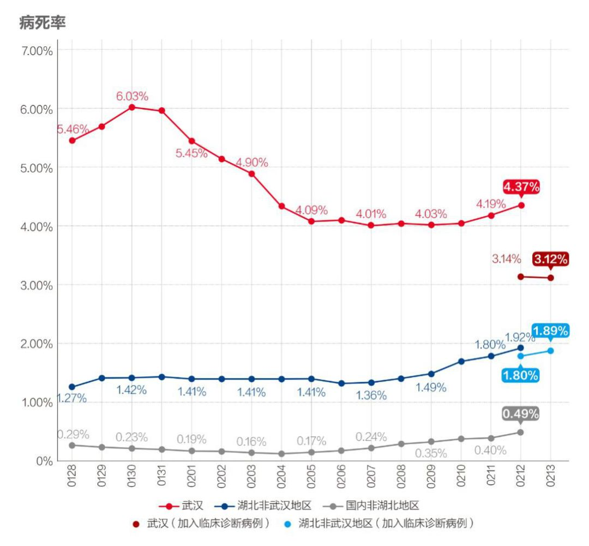

数说疫情0212：武汉形势扭转，湖北夺回主动权，全国继续向好
原文链接 备份链接 文 |《财经》数据研究员 徐进 图 |《财经》视觉中心 编辑 | 谢丽容 1. 今日概况： 根据国家卫健委数据，2月11日0—24时，31个省（自治区、直辖市）和新疆生产建设兵团报告，新增确诊病例2015例（湖 …


文 |《财经》数据研究员 徐进
图 |《财经》视觉中心
编辑 | 谢丽容
1. 新增病例：国内非湖北地区下降态势坚定
2月13日0—24时，全国新增确诊病例5090例，国内非湖北地区已经连续十天下降，超过两个平均潜伏期。

图1

图2
昨天湖北发布的新增病例数因为包含了大比例的存量划转，往前、往后均不可比，所以我们沿用老口径，今天起改为新口径。

图3
按老口径判断，湖北非武汉地区新增病例趋势平稳，利用新口径判断变动趋势，仍需要几天观察。

图4
按老口径看，武汉新增病例也趋势平稳，按新口径仍待观察。
2. 确诊病例增长率：湖北新口径增速上移，国内非湖北地区接近2%

图5
武汉和湖北非武汉地区新的增速均较老口径跳跃向上，变动趋势未明。依老口径计算维持原来趋势。国内非湖北地区增速降至接近2%，倍增时间延长至30天以上。
3. 国内非湖北地区追踪力度加大，存量下降

图6
国内非湖北地区对密切接触者追踪力度持续加大。

图7
国内非湖北地区的该项存量，随疫情缓解和排查能力提高而持续下降。
4. 新增疑似病例和疑似病例存量

图8
湖北和国内非湖北地区的新增疑似病例连日来连续下降。

图9
湖北疑似病例存量连续五日大幅下降。国内非湖北地区继续稳降。
5. 国内非湖北地区在院治疗人数见顶

图10
关于现有在院治疗这个数据，需要多说几句。由于不同平台发布数据不全且不尽一致，说起来可能有些烧脑。湖北卫健委公布“现有在院治疗人数”，但国家卫健委并未公布现有在院治疗人数，只发布“现有确诊病例”。其逻辑关系是：“现有确诊病例”=“累计报告病例”-“累计治愈出院人数”-“累计病死人数”。
在确诊病例能够做到“尽收尽治”的情况下，我们有理由相信“现有确诊病例”=“现有在院治疗病例”。所以我们一直用国家卫健委“现有确诊病例”代替“现有在院治疗人数”，并结合湖北数据计算“国内非湖北地区现有在院治疗人数”，且一直可以自洽。
但昨天的数据出现异常，得出国内非湖北地区在院治疗人数出现大幅“跳增”的不合理情况。经过推理（形同破案）发现，鉴于三个因素：一、湖北昨天刚刚做了大幅口径和存量调整；二、国内非湖北地区在“尽收尽治”方面比湖北好；三、这两天国内非湖北地区新出院人数和新确诊人数已在“黄金交叉点”附近，我们用2月11日国内非湖北地区在院治疗数+新增确诊数-新出院数-新死亡数，我们推算出2月12日数据，并在此基础上进一步推测有6548例确诊病例并未治愈，也并未死亡，但不在医院，而且推测他们都在湖北。我们希望，也相信他们都处在隔离状态。我们暂称其为“确诊未入院病例”。调整后数据如图10。
可以看出湖北地区在院治疗人数仍因口径调整继续大幅增加，国内非湖北地区的这一存量已经见顶。
6. 新增治愈和病死率

图11
新增治愈数继续上升。湖北新治愈人数跳升，有口径转换因素，也有存量划转因素。

图12
国内非湖北地区新增治愈与新增确诊人数已于2月12日成功越过“黄金交叉”点。从这一天起，若不出大的意外，国内非湖北地区近13000例在院治疗者将开始逐步减少。在此之前，国内非湖北地区的另外两个重要存量“尚在接受医学观察人数”和“待排查疑似病例”皆已先后见顶下降。由于这三大存量（我们在数说疫情0211曾详细阐述）都对应着巨大医疗资源和社会资源，它们的全面见顶下降，毫无疑问是关乎整个战局态势的“关键拐点”！

图13
按照新口径，湖北地区病死率明显降低，但国内非湖北地区病死率仍在缓慢提升，很多网友关心这一问题，我们在《数说疫情0212》一文中详细分析过这个问题：由于病程发展，经过一段时间后，病死率在此阶段持续小幅回升当属正常。因为疫情暴发初期，每日入院新增病例猛增，经过一段时间滞后，会带来死亡人数的较快增加；另一方面，随着疫情得到控制，每日新增确诊病例会出现明显下降。这一增（分子），一降（分母），一定会导致病死率回升。只有在疫情基本结束时，这个数值才会逼近“最终病死率”。
小结：国内非湖北地区疫情已先行见“顶”，出现“关键拐点”。国内非湖北地区医疗资源供求开始由被动转主动。但湖北疫情局势仍待明朗。还是要说：湖北加油！武汉加油！
● 数说疫情
数说疫情0212：武汉形势扭转，湖北夺回主动权，全国继续向好

▲点击图片查看更多疫情报道
责编 | 蒋丽 lijiang@caijing.com.cn
本文为《财经》杂志原创文章，未经授权不得转载或建立镜像。如需转载，请在文末留言申请并获取授权。
原文链接 备份链接 文 |《财经》数据研究员 徐进 图 |《财经》视觉中心 编辑 | 谢丽容 1. 今日概况： 根据国家卫健委数据，2月11日0—24时，31个省（自治区、直辖市）和新疆生产建设兵团报告，新增确诊病例2015例（湖 …
原文链接 备份链接 【财新网】（记者 赵今朝 综合）世卫组织正式将新冠病毒肺炎正式命名 “COVID-19”。疫情形势依然复杂严峻，疑似病人存量缓慢消化，医疗资源“捉襟见肘”，基层社区防控落实不到位。保卫战胶着状态之下，湖北省卫健委骤然 …
原文链接 备份链接 非常时期，武汉成了全国人民挂念、祈福的城市。封城后，武汉人民的真实生活是什么样？ 正和岛自1月26日起特别推出《叶青：我在武汉疫区的第N天》专栏。叶青是一位定居武汉40年的市民，也是一名学者和官员。接下来的一段时间， …
原文链接 备份链接 _ 今起武汉全市范围对居民小区实施封闭管理。小编身在武汉，响应号召，更要在家安心分析数据。武汉挺住！ _ 文 |《财经》数据研究员 徐进 图 | 视觉中心总监 黎立 编辑 | 谢丽容 1. 今日概况 2月10 …
原文链接 备份链接 【财新网】（记者 黄蕙昭 综合）武汉“封城”距今已有半月，疫情正呈现城市向农村蔓延、输入型向社区感染型发展的新态势。随着武汉周边地市疫情防控的严峻形势浮出水面，“湖北不止一个武汉”成舆论诉求；疫情艰难攻坚时期，如何避 …